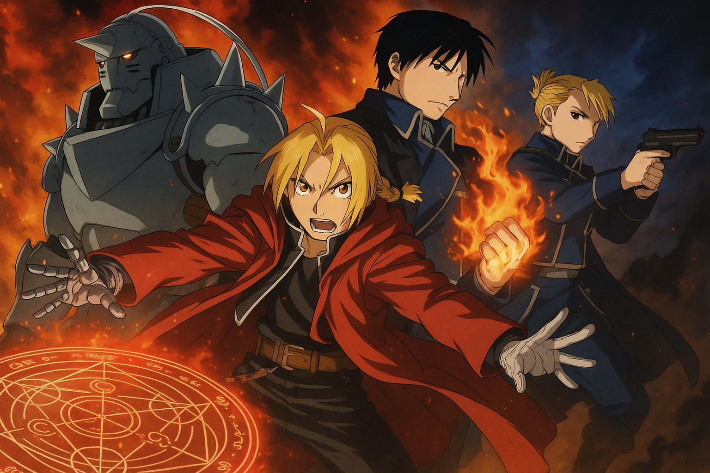

Fullmetal Alchemist: Brotherhood es una serie de anime basada fielmente en el manga de Hiromu Arakawa. Es una historia profunda que mezcla acción, drama, filosofía y temas oscuros, todo en un mundo donde la alquimia es una ciencia avanzada y poderosa. La serie se estrenó el 5 de abril de 2009 y finalizó el 4 de julio de 2010 con un total de 64 episodios.
Trama
Fullmetal Alchemist: Brotherhood es una serie de anime basada fielmente en el manga original de Hiromu Arakawa. La historia sigue a los hermanos Edward y Alphonse Elric, dos jóvenes alquimistas que intentan revivir a su madre fallecida utilizando alquimia prohibida: la transmutación humana. Sin embargo, el experimento fracasa con consecuencias trágicas: Edward pierde una pierna y Alphonse su cuerpo completo. Para salvar a su hermano, Edward sacrifica su brazo y ata el alma de Alphonse a una armadura. Ambos hermanos emprenden un viaje en busca de la Piedra Filosofal, un artefacto legendario que podría restaurar sus cuerpos. En el camino, descubren oscuros secretos del gobierno, la milicia y una organización de seres inmortales llamados homúnculos, liderados por un misterioso ser conocido como Padre, quien busca alcanzar la divinidad a través de un plan a gran escala. La historia explora temas como el sacrificio, la redención, el precio del conocimiento y los límites de la ambición humana. A lo largo de la serie, Edward y Alphonse forjan alianzas, enfrentan poderosos enemigos y crecen tanto en habilidades como en madurez, en una lucha que pondrá a prueba su vínculo fraternal y su humanidad.
Producción
Las seiyuu Romi Park y Rie Kugimiya repitieron su papel como los personajes principales Edward y Alphonse Elric respectivamente. El 20 de marzo de 2009, se anunció que el título de inglés de la serie sería Fullmetal Alchemist: Brotherhood. El 14 de febrero de 2010, la versión doblada en inglés de la serie comenzó a emitirse en Adult Swim de Cartoon Network. Para Hispanoamérica, la serie fue doblada en Venezuela y se conservaron la mayoría de las mismas voces del primer anime para los personajes y fue emitido en Sony Spin.
Tras el estreno del último episodio de la serie en Japón, se anunció que una película estaba en producción. Teniendo en cuenta que el último episodio de la serie terminó de una manera casi idéntica en comparación con el manga, no hay mucho que seguir en cuanto a la determinación de la trama. El primer trailer se estrenó en noviembre de 2010, con el título de Fullmetal Alchemist: Milos no Sei naru Hoshi. La película ha sido programada para un lanzamiento en Japón en julio de 2011, y FUNimation ha anunciado en su blog el 21 de mayo de 2011 que había adquirido los derechos para la película.
Diferencias con el manga
Esta serie de anime no se debe confundir con la serie de anime del 2003 o como secuela de ella, ya que ambas son independientes.
Aunque después de la trama principal del manga, Fullmetal Alchemist: Brotherhood tiene algunas diferencias claras de la obra original, como la mayoría del contenido omitido en los primeros episodios, la cual se elimina presumiblemente debido a su inclusión en el anime de 2003. Algunos ejemplos del material que cambia de la obra original son los siguientes:
- La introducción de personajes exclusivos (por ejemplo Isaac McDougal, el Alquimista de Hielo).
- La temprana incursión de algunos personajes (Kimblee y Padre se muestran durante unos segundos en el episodio 1).
- La muerte de Hohenheim es más prolongada que en el manga original.
- Cuando Codicia es capturado por Ira y llevado de vuelta a Padre, es crucificado en el manga, en lugar de estar atado a un pilar metálico en el anime.
Contacto
¿Tienes sugerencias o deseas contribuir al blog? ¡Contáctanos!